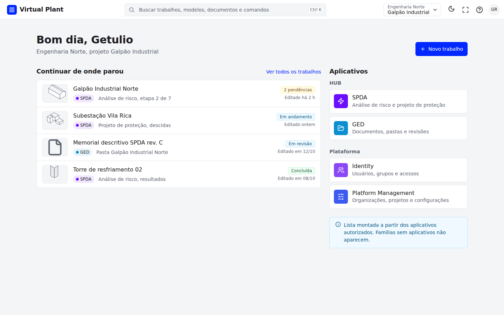
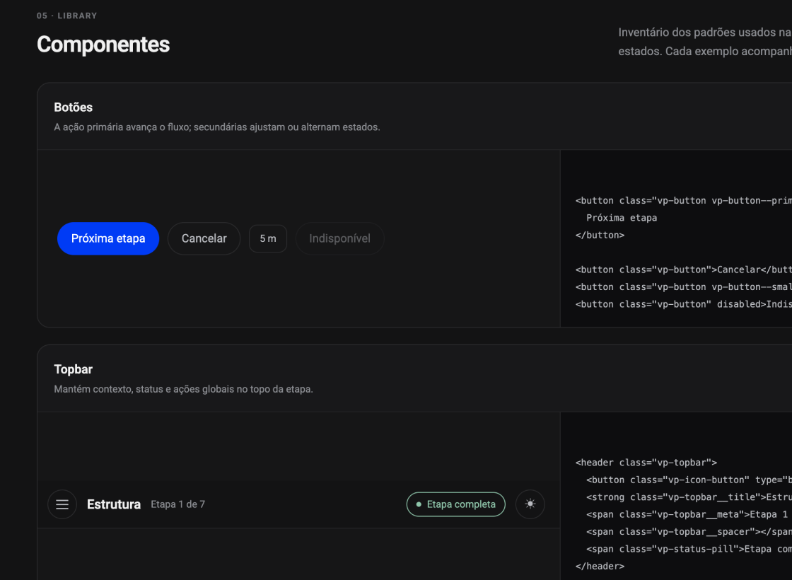

Reutilizar para avançar.
Novos fluxos podem partir de componentes e padrões já definidos. Isso reduz o trabalho de recriar a interface e libera tempo para as necessidades de cada aplicativo.
Virtual Plant HUB · Product Design · 2026
Da jornada do usuário a uma base reutilizável para a startup crescer.
O projeto partiu da jornada do usuário e foi prototipado e codificado com o apoio dos agentes Claude Code e GPT Astra. Na implantação, foi adaptado à arquitetura real da Virtual Plant e conectado aos tokens do design system.
01 / Jornada e processo
A jornada do usuário foi o ponto de partida. O design system conectou as decisões de experiência à prototipação, ao código e à arquitetura do produto.
Os fluxos de uso orientaram a organização da experiência e dos padrões que poderiam ser compartilhados entre os aplicativos.
Claude Code e GPT Astra apoiaram a prototipação e a codificação a partir dessa jornada, com as decisões de design orientando o trabalho.
O projeto passou por uma adaptação à arquitetura da Virtual Plant e pela conexão aos tokens do design system, alinhando a interface à base do produto.
Novos fluxos podem partir de componentes e padrões já definidos. Isso reduz o trabalho de recriar a interface e libera tempo para as necessidades de cada aplicativo.
Tokens e regras compartilhados permitem evoluir temas, densidades e estados com a mesma referência para design, desenvolvimento e agentes.
02 / A base compartilhada
O design system reúne tokens, componentes, estados e regras de uso. A navegação e o espaço de trabalho formam uma base reutilizável; cada aplicativo acrescenta os fluxos da sua especialidade.
O Shell mantém o contexto enquanto a pessoa troca de aplicativo. A navegação é compartilhada; a disponibilidade de apps deve respeitar as permissões de cada pessoa.
Selecione uma camada para conhecer sua função no sistema.Ver na interface ↓

Home · Contexto do projeto, aplicativos e continuidade do trabalho.Captura da documentação v10
03 / Tokens em uso
Os tokens traduzem decisões de cor, tipografia, espaço e interação em valores reutilizáveis no código. Troque o tema e a densidade para ver os mesmos componentes se adaptarem.
SPDA / GALPÃO INDUSTRIAL NORTE
Organize uma nova análise a partir do modelo do projeto.
Demonstração local: os dados de exemplo são descartados ao recarregar a página.
Os componentes consomem nomes semânticos. Os valores mudam com o tema; a intenção permanece.
04 / Workbench
Selecione uma zona para ver a relação entre navegador, modelo e propriedades. A seleção é compartilhada: a pessoa não precisa reconstruir o contexto a cada painel.
05 / Estados da interface
Carregamento, primeiro uso e erro também fazem parte da jornada. Padrões reutilizáveis ajudam cada aplicativo a comunicar o que aconteceu e oferecer o próximo passo.
06 / Documentação
Cada ficha reúne uso, anatomia, estados e acessibilidade. Consulte a seleção abaixo ou abra o design system completo para explorar os tokens, as telas e os exemplos de componentes.
Nenhum componente encontrado. Tente “Button”, “Shell” ou “Workbench”.

Seu próximo projeto
Da jornada ao código, um design system ajuda a transformar decisões de produto em componentes que a equipe pode reutilizar e evoluir.